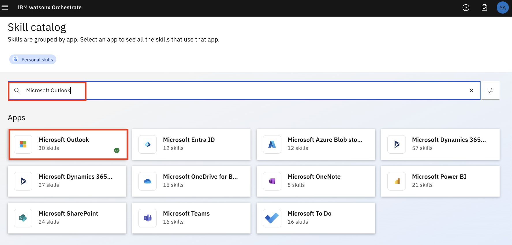
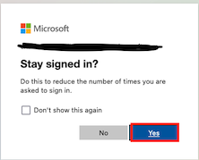
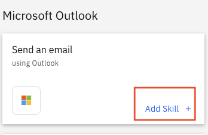

Technical Lab2
このLabでは、watsonxを用いたコンテンツ生成のカスタムスキルと、Outlookでメールを送信するプリビルドスキルを組み合わせて、スキルフローを作成します。
前提条件
- watsonx Orchestrateの環境にアクセスできること。
- IBM-idを用いてログイン可能であること。
- スキルの作成、追加を行う権限があること。
- watsonx のAPIキー (講師から配布されます)
- Outlook のemail IDと資格情報 (講師から配布されます)
STEP1:コンテンツ生成のスキルをインポートしよう
このセクションでは、watsonx Orchestrateの主な画面構成について学びます。
- watsonx Orchestrateにログインします。
- watsonx-skill-fileをダウンロードします。リンクを右クリックして名前を付けてリンクを保存を選択すると、ご自身のPCに保存できます。または、ブラウザ上でjsonファイルを開いても構いません。
- お好みのエディター (VSCode、vi/vimなど) を用いてファイルを編集します。
YourName - watsonx skill for WxO(4行目) を探し、YourName をご自身のイニシャルに変更します (例:山田太郎さんなら、TY - watsonx sill for WxO)。同様に、Generate Content (YourName)(22行目) も変更します。- ファイルを保存します。
-
watsonx Orchestrateの画面でSkills and apps→Add skillsを選択します。
-
From a fileタブを選択します。
-
先ほど編集した
basic_watsonx1.jsonという名前のファイルをご自身のPCから指定の場所にドラッグアンドドロップします。アップロードされると、watsonx Orchestrateはjsonファイルをインポートする前に検証します。Nextをクリックします。 -
インポートするスキルのチェックボックスにチェックを入れ、Addをクリックします。
-
スキルのインポートに成功すると、以下のように表示されます。

-
Skills and appsのページで、作成したスキルを検索します (例:Generate content (TY) )。スキルを公開するために、右端の ⁝ からEnhance this skillを選択します。
-
複数のタブがある画面が表示されます。左端のNameタブはスキルの名前を表しています (先ほどjsonファイルで変更した部分です)。
-
Inputタブをクリックします。required (必須) になっている欄となっていない欄があることが確認できます。
-
他のタブも同様に動作を確認できます。
- Outputタブは、スキルの出力を設定できます。スキルの実行結果をテキストや表の形式で出力することができます。。
- Securityタブは、スキルを実行するために必要な認証情報を設定できます。
- Next Best Skillタブは、このスキルが使用された後に、次に行うべきスキルとしてwatsonx Orchestrate が提案するスキルを設定します。
-
Phrasesタブは、チャットからスキルを呼び出すためのフレーズを入力します。多くのフレーズを入力するほど、自然言語からスキルを判断する精度が向上します。
-
フレーズのテキスト欄に、
generate contentを入力しEnter(return) を押します。 Note: フレーズを入力するにはEnter(return) を押さなければなりません。content,testなどのフレーズを追加することも可能です。 そして、Publishを押します。 -
スキルが公開（publish）できたというメッセージが表示されます。
-
スキルが正常に公開されました。
-
補足: 先ほど公開したスキルをカタログから探して、ステータスを確認してみましょう。ステータスはどのようになっているでしょうか？ _______
Step2:新入社員向けの歓迎メールを生成して、スキルをテストしてみよう
このセクションでは、インポートしたスキルをテストする方法について説明します。 スキルをテストするには、カタログからスキルを追加して実行する必要があります。 このための手順は、以下のとおりです。
-
左上にあるメニュー (≣) をクリックし、チャットを選択して、チャット画面に移動します。
-
Add skills from the catalogを選択し、前のステップで作成したスキルを選択します。

-
検索バーで、
generate contentを検索します。 先ほど作成したスキルをクリックします。(名前)- WxO Bootcamp- watsonx skill for WxO -
スキルを追加する前に、このスキルを接続するための API キーを指定し、スキルを使用するときに必要な出力を設定する必要があります。 このAPI キーは、セッション中に講師から提供されます。
-
Connect appボタンをクリックします。
-
提供されたAPI キーを追加し、Connect appボタンをクリックします。 指定されたAPI キーが有効な場合は、画面に正常な通知が表示されます。
-
次にAdd skillをクリックします。
-
スキルが追加された (
Added) というメッセージが表示されます。 -
Chat画面に戻ります。これで、スキルが表示されます。
-
スキルをテストするには、スキルをクリックします。
-
前のステップで説明したように、input は必須フィールドになっているため入力する必要があります。
-
create welcome email to new hiresという語句を入力します。 -
スキル実行の一環として、進行状況が視覚的に表示され、「..」というメッセージが表示されます。 最後に、新入社員を歓迎する E メールのコンテンツを生成します。
-
歓迎メールのコンテンツ生成をテストが完了しました。
Step3:カタログからスキルを追加し、Outlookでメールを送ろう
Outlook でメールを送信するスキルは既にインポートされています。 このスキルを追加し、Microsoft Outlook に接続してテストする必要があります。 Outlook に接続してメールで送信できるようにするには資格情報が必要になります。 差出人として自身のメールアドレスと資格情報を使用することはできません。
-
Chat に移動し Add skills from the catalog をクリックするか、左上のメニューに移動して Skills catalog を選択します。

-
Microsoft Outlook を検索します。 
-
Microsoft Outlookをクリックし、Send an email using Outlook の中でAdd skillを選択します。 これで、このスキルはAddedとして表示されます。

-
Chat画面に移動すると (Menu -> Chat) 、このセクションで追加された 2 つのスキルが表示されます。
-
これで、Send emaill スキルを追加するセクションは完了です。
Step4:自身のメールアドレスへメールを送り、スキルをテストしてみよう
このステップでは、スキルを Microsoft Outlook に接続します。 この資格情報は、講師から提供されます。
-
Chat画面に移動します。
-
Send emailスキルを選択します。右下にリンク切れのマークが表示されています。これは、スキルがどの E メール・システムにも接続されていないことを意味します。

-
リンク切れの (緑色のボックスで囲んだ)マークをクリックします。 スキルが Microsoft Outlook に接続されていないことが通知されます。 Connect app をクリックして Microsoft Outlook に接続します。
-
Type にデフォルト値の Non-admin user を使用し、Connect app ボタンをクリックします。 これにより、Outlookに移動します。 講師から提供される資格情報を使用します (IBM のメールアドレスを使用して Outlook に接続することはできません) 。

-
!!! パスワードをブラウザーやパスワード・マネージャーに保存しないでください !!! 
-
アプリが接続されたことが確認できます。

-
スキルをテストするために Chat 画面に移動します。Send an email スキルをクリックします。
-
To: の欄はご自身のメールアドレスを使用します。件名を Subject の欄に記入します。（例:
Test send email skill）Content 欄はメール本文を入力します。（例:Hello and welcome!）Apply ボタンをクリックします。 -
The email was sent というメッセージが表示されます。ご自身のメールボックスにメールが送信されているか確認してみてください。
-
これで Send email スキルをテストするステップは完了です。
Step5:2つのスキルを組み合わせてスキルフローを作成しよう
これまでは、個々のスキルをインポートし、追加し、テストしました。watsonx Orchestrate では、個々のスキルだけでなく、2つ以上のスキルを組み合わせて、スキルフローを作成することができます。 手順は以下のとおりです。
-
Menu -> BUild -> Skills に移動します。
-
Ass skills のドロップダウンリスト () から Create an skill flow を選択します。
-
スキルフローに名前を付けるため、鉛筆 アイコンをクリックします。例:
Generate content and send emai - YourName、YourName は TaroYamada のようにすることをお勧めします。
-
名前を付け (フローの名前に自分の名前を含めて)、説明 (Description) を追加して保存します。
-
スキルを追加するには、+ をクリックします。Generate content を検索して、ご自身の WxO Bootcamp - watsonx besic skill を選択します。
-
インポートさたスキルが表示されます。Add skill を選択します。
-
このスキルがフローに追加されます。
-
追加したスキルの後にある + をクリックします。 Send email を検索します。
-
Microsoft Outlook をクリックすると、Microsoft Outlook の下にグループ化されたすべてのスキルが表示されます。 Send an email の中の Add Skill をクリックします。 
-
これで、スキル・フローが作成されました。 以下のようになります。
-
生成されたコンテンツをメールの受信者に送信するために、最初のスキルの出力を 2 番目のスキルの入力にマップします。これを行うには、Generate content (YourName) をクリックします。 Inputのパラメーターを確認してください。 他のスキルの出力をこれらのパラメーターにマップできます。 ここでは text の形式で出力されるものが 1 つあります。
-
次に、Send an email をクリックしてinput と OUtput のパラメーターを確認します。 INput タブをクリックしてください。body.Content の欄をクリックすると、 注意:
-
以上でこのステップは完了です。